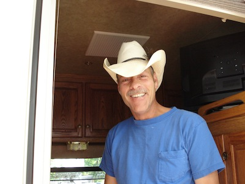

Donald Lee Ellis
December 29, 1956 - February 6, 2013
Donald Lee Ellis, son of George H. Archer and Bertha E. Archer was born December 29, 1956
in Des Moines, Iowa and passed from this life Wednesday, February 6, 2013 in Madison County,
Iowa. He was 56 years of age.
Don graduated from Saydel High School in 1975. He served his country with the United States
Army.
He married his high school sweetheart, Sharon Anne Farrell, on August 7, 1976 in Des Moines,
Iowa and 2 children, Shawna and Mandi blessed this union.
Don was self-employed. His passion was breeding and riding horses. He was a member of
the Iowa Rocking Fox Trotters as well as the New Virginia Saddle Club. He enjoyed fishing,
camping, spending time with his family and collecting rocks. However, his greatest joy came from
spending time with his grandchildren, who had him wrapped around their finger!!
Don was preceded in death by his mother; and his nephew, John Henry Ellis.
He leaves to cherish his memory; wife, Shari of Prole; daughters, Shawna (Noel) Isaac of New
Virginia and Mandi (Cody) Amos of New Virginia; father, George H. Archer(Jean) of Des Moines;
Brothers, John Ellis of Des Moines; Tony (Dee) Ellis of Des Moines; George (Jennifer) Archer of
Polk City; Dean (Becky) Archer of Ankeny; Sisters, Donna (Les) Wildin of Patterson and Mariruth
(Brian) Sample of West Des Moines; Grandchildren, Katelyn and Colten Amos, as well as many
nieces; nephews; aunts; uncles other relatives and many friends.
See more photos of Don and the horses he loved at
http://www.ellisfoxtrotters.com/.